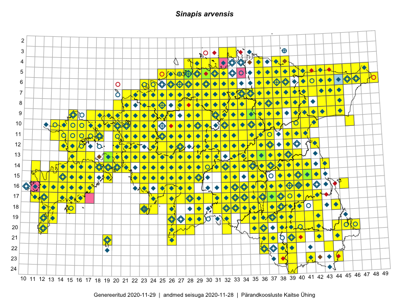

Sinapis arvensis
Uuendatud: 2016-12-01
Kaardile koondatud taksonid: Sinapis arvensis L.

Kaart põhineb 526 kirjel, neist vaatlusi 525 ja eksemplare 1.
Kuvatud viited 20 esimesele andmebaasikirjele, ülejäänud PlutoFis
- Malle Leht: 2015-07-09: : ala
- Toomas Kukk, Thea Kull, Timo Luhamäe, Ott Luuk, Peedu Saar: 2015-06-28: 13-26: ala
- Toomas Kukk, Eerik Leibak: 2015-08-12: 10-17: ala
- Toomas Kukk, Eerik Leibak: 2015-08-12: 09-17: ala
- Toomas Kukk, Eerik Leibak: 2015-08-10: 13-15: ala
- Toomas Kukk, Peedu Saar: 2014-09-25: 07-42: ala
- Tiit Hallikma, Indrek Tammekänd, Toomas Kukk: 2015-06-09: 12-29: ala
- Rein Kalamees, Kersti Püssa: 2015-08-04: 03-33: ala
- Tiit Hallikma, Toomas Kukk: 2015-07-21: 05-45: ala
- Toomas Kukk, Raivo Kalle: 2015-05-14: 09-41: ala
- Peedu Saar, Ott Luuk: 2015-06-21: 14-41: ala
- Ott Luuk, Peedu Saar: 2015-07-27: 11-35: ala
- Peedu Saar: 2015-07-04: 18-44: ala
- Peedu Saar: 2015-07-14: 15-38: ala
- Peedu Saar: 2015-07-15: 15-39: ala
- Ott Luuk, Toomas Kukk, Thea Kull, Peedu Saar, Timo Luhamäe: 2015-06-25: 11-24: ala
- Peedu Saar, Ott Luuk: 2015-07-27: 10-35: ala
- Toomas Kukk, Peedu Saar: 2014-07-09: 07-43: ala
- Toomas Kukk, Peedu Saar: 2014-07-03: 14-21: ala
- Ott Luuk: 2015-06-28: 13-26: ala